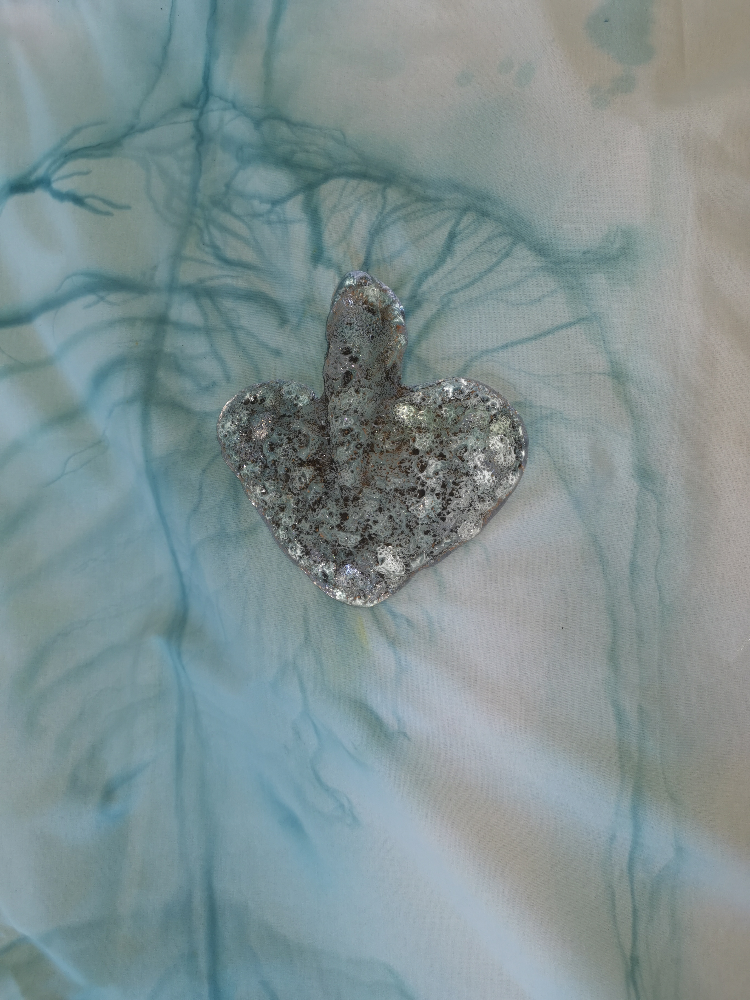
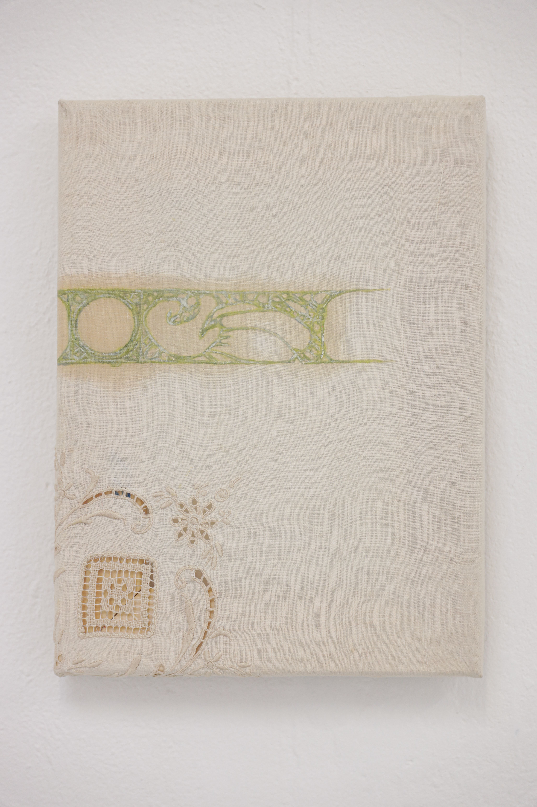
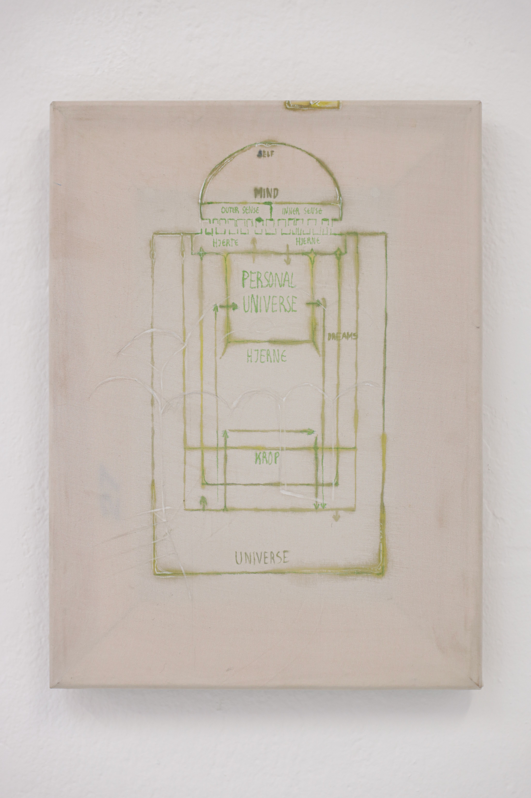

star body
Go and catch a falling star,Get with child a mandrake root,
Tell me where all past years are,
Or who cleft the devil's foot,
Teach me to hear mermaids singing,
Or to keep off envy's stinging,
And find
What wind
Serves to advance an honest mind.
....
Song by John Donne

Glass,Black Lava sand, Cotton bed sheets, tears, heat and copper for turquise pigment.
of variable size
A star falls, A boy and an old lady is runing on the heather to catch it.
The falling star makes a pitiful noise as it bends to avoid the hands of the boy.
"no, i have to die" says the star
"I can save you, if you let me catch you" says the boy.
 Map of Action
Map of Action Bed linen, oil, dry pigments, despair and a need to organize.
80x80x0,5cm
 Star Body
Star Body Glass,Black Lava sand, Cotton bed sheets, tears, heat and copper for turquise pigment.
of variable size
 Detail of Romantic Connection.
Oil paint and strong feelings on inherited handkerchief.
23x27x1 cm.
 Map of relation
Oil paint, ink, reflection and a wish to understand on silk.
23x27x1 cm.